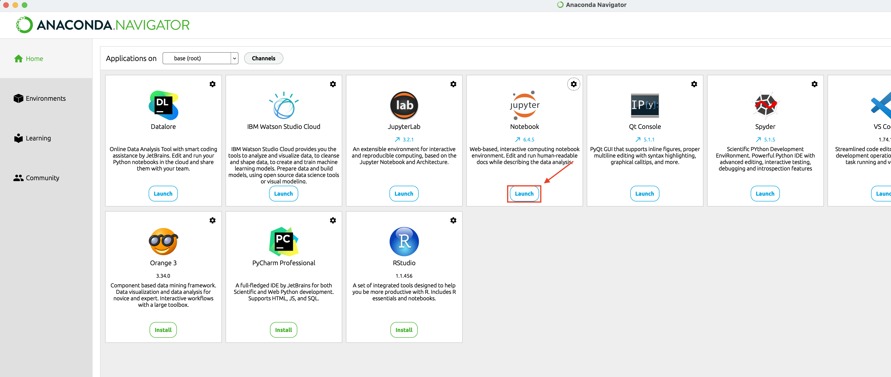

Launching a Jupyter Server
In this guide, you will learn how to launch a local Jupyter server using Anaconda Navigator and open a HW file from your download folder. Make sure you have Anaconda installed on your computer before proceeding.
Please review important information on course polices on collaboration among students before submitting your course deliverables.
Don’t forget to rename your file as shown in “Working with HW. ipynb files”, Step-2, as you work on them.
Step 2: Launch Jupyter Notebook
- In Anaconda Navigator, locate the “Jupyter Notebook” tile and click the “Launch” button next to it. This will launch a local Jupyter server on your computer.

Step 3: Access Jupyter Dashboard
- After the Jupyter server has started, your default web browser will open with the Jupyter Dashboard. This dashboard is a web-based interface to your Jupyter environment.
- You can navigate through your file system using the dashboard to locate and access your files.
Working with HW .ipynb files
Step 1: Open the HW1 File
- Navigate to your “Download” folder using the Jupyter Dashboard. You can use the file browser within the dashboard.
- If asked to allow terminal access to the Download folder, click on “Allow”
Look for the HW1 file within the “Download” folder.
Select the file by clicking on it. This will open a new Jupyter notebook or file editor for your HW1 file.
Step 2: Rename the HW File
Before you begin working on your HW, it’s necessay to rename the file to include your last name. This is how you’re expected to turn in your HW files.
- Right-click on the file.
- Select “Rename.”
- Change the file name to “HW1_<Your Last Name>.”
Step 3: Work on Your HW
You can now work on your renamed HW assignment within Jupyter Notebook. When you’re done, remember to save your changes.
You’ve successfully launched a local Jupyter server using Anaconda Navigator, opened the HW1 file, and renamed files with your last name. Happy coding!
Reminders
Please review important information on course polices on collaboration among students before submitting your course deliverables.
Don’t forget to rename your file as shown in “Working with HW. ipynb files”, Step-2, as you work on them.